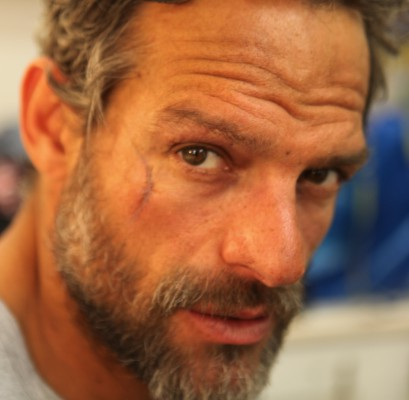

#6612 Personal Shopper

 IMDB-Wertung: 6.2 / 10
IMDB-Wertung: 6.2 / 10  Metascore: 0
Metascore: 0 
Maureen ist ein Personal Shopper, also eine Kaufberaterin in Mode-Dingen in Frankreichs Fashion-Metropole Paris. In dieser Tätigkeit, die sie eigentlich nicht ausstehen kann, kauft sie Kleidungsstücke für eine berühmte Person. Doch der Job ist nur ein Mittel zum Zweck: Mit ihm finanziert sie sich ihren Lebensunterhalt, damit sie hier auf ein Zeichen ihres Zwillingsbruders Lewis warten kann, der verschwunden ist. Während ihres Aufenthalts in der französischen Hauptstadt trifft Maureen allerdings nicht nur ganz unterschiedliche Kleidungsexperten, sondern hat auch Begegnungen der geisterhaften Art.
Jahr: 2016
Dauer: 105 Minuten
FSK: 12
Land: Frankreich Studio: UFATonspuren: DTS - ,
Untertitel: Deutsch, Englisch,
Auflösung: 1080p (1920x800) Größe: 8171 MB
Genre: Thriller, Drama, Mystery
Regisseur: Olivier Assayas
Drehbuch: Olivier Assayas
Soundtrack:
Darsteller:
 Kristen Stewart als Maureen Cartwright
Kristen Stewart als Maureen Cartwright Lars Eidinger als Ingo
Lars Eidinger als Ingo Anders Danielsen Lie als Erwin
Anders Danielsen Lie als Erwin- Ty Olwin als Gary
 Nora von Waldstätten als Kyra
Nora von Waldstätten als Kyra- Benjamin Biolay als Victor Hugo
- Olivia Ross als Attachée de presse maison de couture Londres
- Charles Gillibert als Spiritist
 Yun Lai als Chinese Guy , uncredited
Yun Lai als Chinese Guy , uncredited- Sigrid Bouaziz als Lara
- Hammou Graïa als Police Officer
- Audrey Bonnet als Cassandre
- Pascal Rambert als Jérôme
- Aurélia Petit als Chanel Press Attache
- Thibault Lacroix als Attachée de presse maison de couture Paris
- Calypso Valois als Assistante séance photo
- Benoit Peverelli als Photographer
- Dan Belhassen als Cardiologist
- Leo Haidar als Kyra's Lawyer
- Mickaël Laplack als Réceptionniste de l'hôtel
- Vianney Duault als Vendeur Cartier
- Célia Ouallouche als Réceptionniste Louboutin
- Khaled Rawahi als Oman Chaffeur
- Julie Rouart als Vendeuse
- Monika Bastová als Mrs. Hugo
- Jakup Stritezsky als Charles Hugo
- Charlotte Caussarieu als Adèle Hugo
- Christina Konstantinidis als Augustine Allix
-  David Bowles als Jules Allix
- Natasa Novotna als Ghost
- Iris Müller-Westermann als
- Helmut Zander als
- Akil Wingate als Congolese Animal Reservationist
 Pamela Betsy Cooper als Eurostar Business Traveller , uncredited
Pamela Betsy Cooper als Eurostar Business Traveller , uncredited- Abigail Millar als Eurostar passenger , uncredited
Datei: X:\2016(N-Z)\Personal Shopper (2016, FSK12, 1920x800).mkv seit 25.07.2017
Festplatte: HD 2016(A-Z)
 Es gibt insgesamt 182 Filme in der Gruppe '2016(N-Z)'
Es gibt insgesamt 182 Filme in der Gruppe '2016(N-Z)'